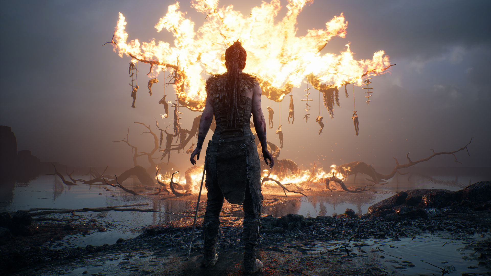
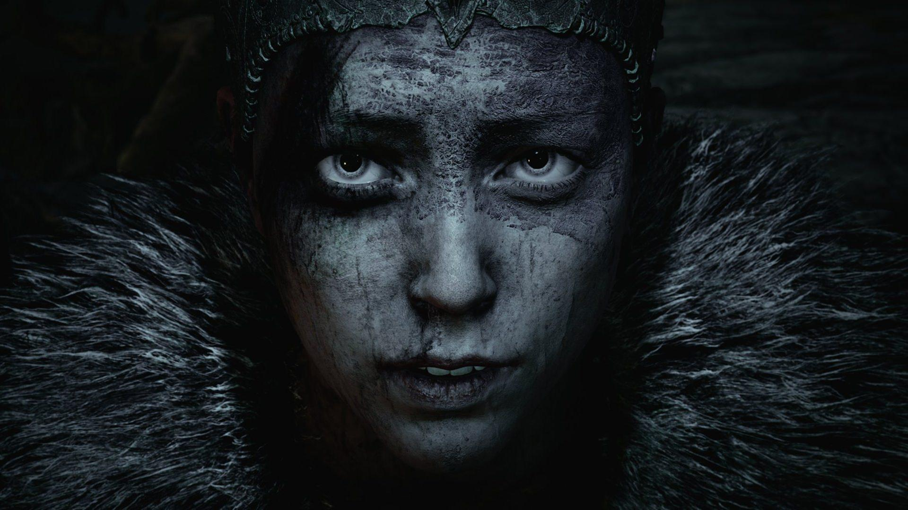
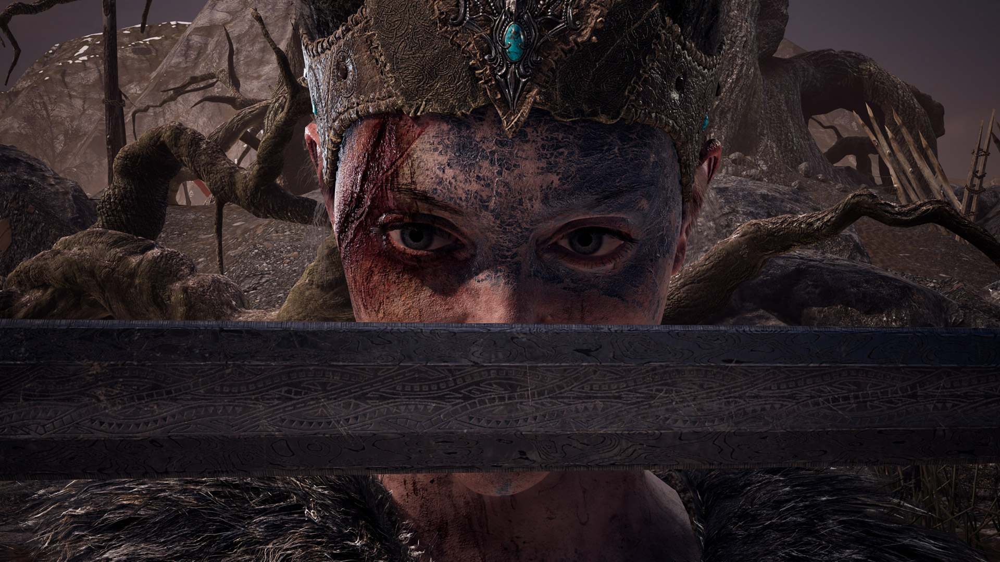

Hellblade: Senua's Sacrifice
Dos criadores de Heavenly Sword, Enslaved: Odyssey to the West e DmC: Devil May Cry, chega a jornada brutal de um guerreira pelo mito e loucura.
Senua é uma guerreira celta que sofre de psicose severa e experimentou um imenso trauma após seu lar ter sido invadido e destruído por guerreiros vikings. Hellblade acompanha a jornada dela até Helheim, o mundo dos mortos da mitologia nórdica governado por Hela.
Hellblade não tem HUD ("heads-up display", ou elementos indicativos na tela), tutoriais ou indicações visuais do que você precisa fazer para progredir, de forma a tornar a experiência crua e bastante diferente do que estamos acostumados em games de ação. O auxílio que encontramos estão nas várias vozes que Senua escuta a todo momento, mas que nem sempre estarão falando a verdade. Todos estes aspectos são apenas algumas das mecânicas que a Ninja Theory criou a fim de representar os problemas mentais da protagonista.
Trilhe seu caminho pela loucura de Senua
Há outros segredos visuais que dispenso a descrição a fim de manter a descoberta da experiência, mas é necessário dizer como é incrível o modo que o estúdio elaborou para fundir a doença de Senua com cada uma das mecânicas do game. É impossível descrever com precisão o desespero que é escutar gritos, sussurros e barulhos simultâneos enquanto você tem de prestar atenção para não falhar. E isso é somente um pedacinho do inferno pessoal que Senua precisa enfrentar.
O impacto da atuação e trabalho sonoro
O impacto do sofrimento de Senua não seria o mesmo sem a sua intérprete na vida real, a alemã Melina Juergens, que realizou uma emocionante performance ao representar cada traço de aflição do rosto da personagem, e da qualidade surpreendente da animação, feita a partir de captura de movimentos em tempo real. A imersão é ainda maior graças à trilha sonora e ao inteligente uso do áudio 3D, que simula como os sons são captados por ouvidos humanos -- por isso, o uso de um headset na jogatina é indispensável.
Uma narrativa bem escrita que merece a sua atenção
Além da narrativa intensa, fãs da mitologia nórdica ficarão empolgados com a grande quantidade de informações que Hellblade carrega sobre o tema. Citando até o Ragnarok, Hellblade também é uma aula para quem deseja conhecer mais sobre as antigas lendas de Odin e Loki, trazendo também narrações que são ativadas somente com a ação do jogador -- o que significa que você não é obrigado a ouvir exatamente tudo o que a história tem para contar.
Screenshots de Hellblade: Senua's Sacrifice
Hellblade: Senua's Sacrifice já está disponível para Xbox One e as demais plataformas.